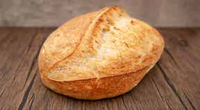

How to Make Sourdough Bread

Ingredients
- (227g) ripe (fed) sourdough starter
- 1 1/2 cups (340g) water, lukewarm
- 1 to 2 teaspoons instant yeast*
- 2 1/2 teaspoons (15g) salt
- 5 cups (600g) King Arthur Unbleached All-Purpose Flour
Instructions
- Weigh your flour; or measure it by gently spooning it into a cup, then sweeping off any excess. Combine all of the ingredients, kneading to form a smooth dough.
- Allow the dough to rise, in a lightly greased, covered bowl, until it's doubled in size, about 90 minutes.
- Gently divide the dough in half; it'll deflate somewhat. Preshape each piece of dough by pulling the edges into the center, turning it over so the seam is on the bottom, and rolling under your cupped hands to form a ball. Let the dough rest, covered, for 15 minutes.
- To make fat oval loaves, elongate each ball of dough you've preshaped by gently rolling it back and forth on an unfloured work surface several times. For longer loaves, continue rolling until they're about 10" to 11" long.
- Place the loaves on a lightly greased or parchment-lined baking sheet. Cover and let rise until very puffy, about 1 hour. Towards the end of the rising time, preheat the oven to 425°F.
- Spray the loaves with lukewarm water and dust generously with flour.
- Make two fairly deep diagonal slashes in each; a serrated bread knife wielded firmly or a lame, works well here.
- Bake the bread for 25 to 30 minutes, until it's a very deep golden brown. Remove it from the oven, and cool on a rack.
Tips from our Bakers
Why the range in yeast amount? If you're sure your starter is healthy and vigorous, and you don't mind potentially extending somewhat the rise times listed above, use 1 teaspoon yeast. If your starter seems a bit lethargic (or you want to keep your rise times on the shorter side), go with 2 teaspoons.
For an assertively sour loaf, read our recipe for Extra-Tangy Sourdough Bread.
Want to make a loaf with an even chewier, crustier crust? See our blog post, Baking bread in a Dutch oven.
Don’t have any starter? Here’s a recipe for homemade sourdough starter. If you're making it from scratch, you'll need to feed it for 5 to 7 days before it’s ready for baking. Want a head start? Purchase our classic fresh sourdough starter – it’ll be ready for baking soon after it arrives at your door. Looking for tips, techniques, and all kinds of great information about sourdough baking? Find what you need in our sourdough baking guide.